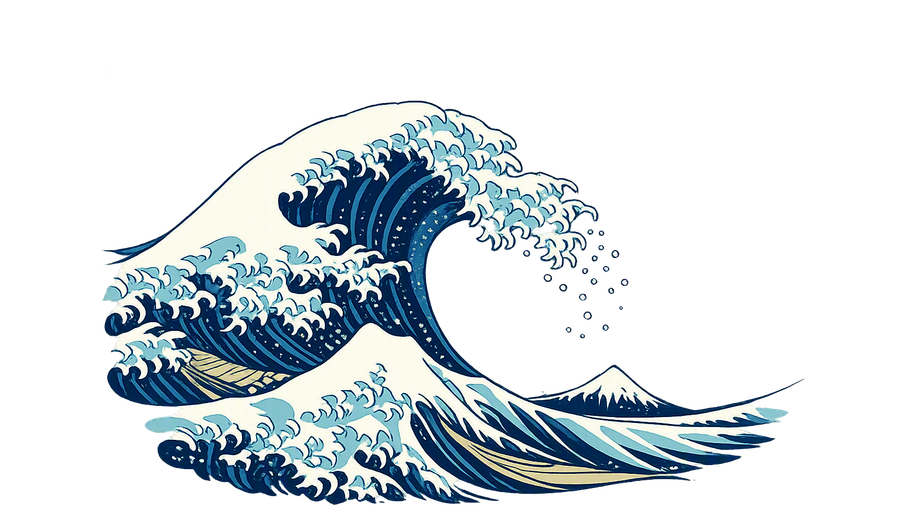

浮世绘
像素
中国风

周末去哪
天气筛选 · WEEKEND WEATHER
数据来源：中国气象台 nmc.cn 未公开接口，仅供个人学习使用
正在加载…
相比上次抓取的变更
清除对比基准
✓ 变好的条目（点击展开）
日 期 范 围
本周末
下周末
下个法定节假日
数据加载后显示可筛选的日期范围
筛 选 条 件
雨天接受度
不限
1 只接受无雨
2 小雨可以
3 中雨也行
4 不限
白天 ≤
夜间 ≥
至少
天达标
小时圈内
任一方式
高铁
飞机
自驾
操 作
重新抓取
复制分享链接
复制文本汇总
导出 CSV
城市管理
出行数据
温度走势
城市选择 · 按省分组
全选(搜索结果)
全不选
恢复默认
导出文本
导入文本
出行时长 · 小时，可留空
导出 JSON
导入 JSON
城市
达标
逐日雨况(✗=不达标)
综合雨况
白天温度
夜间温度
总降水
发报时间
出行时长
预警
温度走势 · 今天起 7 天预报（可勾选筛选结果中的城市）